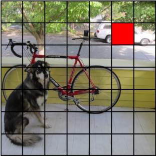
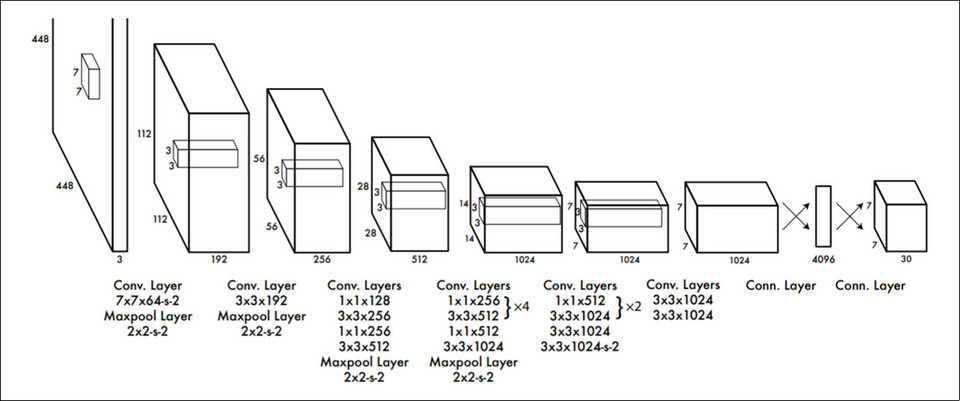
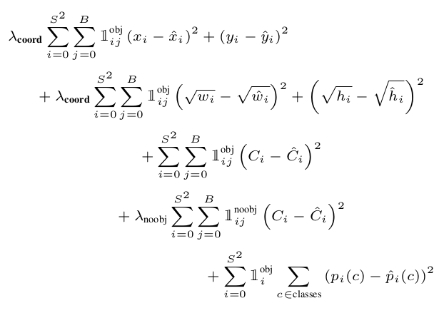
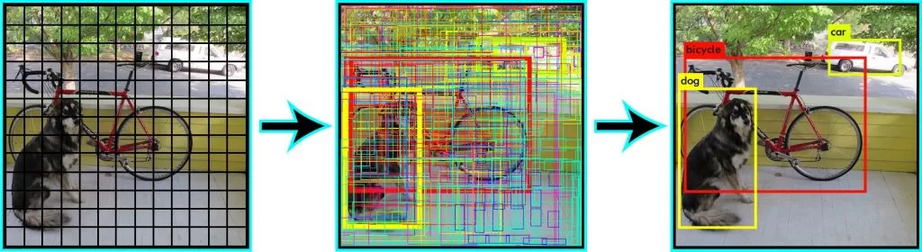
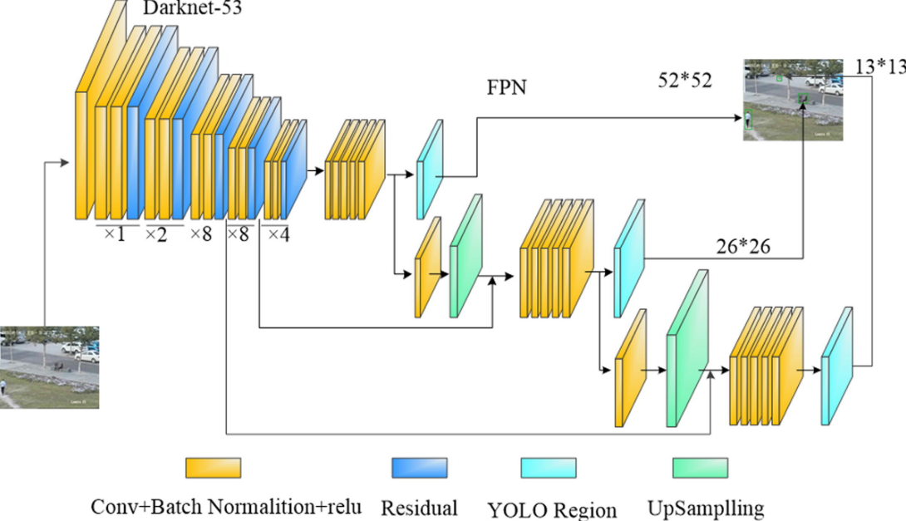

YOLO
Table of Contents
1 YOLO
You Only Look Once: Unified, Real-Time Object Detection 2016/5
1.1 cell
yolo 把图片分为 S * S 个 cell, 若某个 box 的中心点位于这个 cell, 则该 box 由这个 cell 负责, 所谓 `负责` 主要是和 loss 的计算有关:
- 对于某个 box, 找到负责这个 box 的 cell, 用这个 cell 的预测结果来计算 loss
- 对于不负责任何 box 的 cell, 会通过 minimize (predict confidence, 或者叫 objectness confidence) 来计算 loss
这一点与 ssd 有些类似: 只有标签中的 pos_index 才会参与 loc_loss 的计算, 只不过 pos_index 是通过计算 anchor 与 box 的 iou 来确定的, 而不是像 yolo 这样通过中心位置.

上图 S = 7, 红色的 cell 负责汽车.
1.2 network

yolo 使用的网络包含 24 个 conv layer 和两个 fc layer, 输出为 [S, S,(class, B*C, B*box)], 其中:
- S*S 个 cell
- class 是 class confidence, 大小为 20
- B*C 是 B 个 objectness confidence, 大小为 B*1
B*box 是 B 个 bounding box 的坐标, 大小为 B*4
后两项乘 B 是因为 inference 时每个 cell 会预测 B 个 box, 我们在计算 loss 或计算最终预测结果时会选择 B 个 box 中 C 最大的
上面的图中, S=7, B=2, class=20, 所以输出为 [7, 7, 20+2+2*4]
1.3 inference
模型输出的后处理过程:
- 通过 argmax 找到 B 中 C 最大的 cell box, 输出变为 [S, S, (class, C, box)]
- 对 S*S 个 cell box 做 NMS, 其中 score 为 argmax(class)*C, 即综合考虑 class confidence 和 predict confidence
1.4 loss

yolo 最重要的部分是对 loss 的定义, 计算 loss 的步骤为:
确定 box 属于哪个 cell
cell_mask = np.zeros([cell_size, cell_size, 1]) i, j = int(cell_size * ycenter / input_height), int(cell_size * xcenter / input_width) cell_mask[i][j] = 1
这个 cell_mask 相当于原论文中的 \(\mathds{1}_i\)
先计算 S*S*B 个 cell box 与 box 的 iou, 并从 B 个 cell box 里找到 iou 最大的, 得到一个 mask, 后续通过这个 mask 可以得到这些最大的 cell box
I = iou(predict_boxes, label[0:4]) max_I = tf.reduce_max(I, 2, keepdims=True) best_box_mask = tf.cast((I >= max_I), tf.float32)
cell_mask*best_box_mask 相当于原论文中的 \(\mathds{1}_{ij}\)
object loss (C)
如果 cell 负责一个 box, 则计算 cell 的 pred_C 与 iou 的 l2 loss, 即 yolo 把 iou 做为 C 的 label, 这个 loss 意味着 iou 越大越好 (但感觉上这个 loss 和coord loss 有些重复?)
object_loss = tf.nn.l2_loss(cell_mask * best_box_mask * (pred_C - I)) * alpha
noobject loss (C)
如果 cell 不负责任何 box, 则计算 cell 的 pred_C 与 0 的 l2 loos (则 pred_C 越小越好)
noobject_loss = tf.nn.l2_loss((1 - cell_mask) * (pred_C)) * beta
coord loss (x,y,w,h)
如果 cell 负责一个 box, 则计算 pred_coord 与 box 的 coord 的 l2 loss
coord_loss = (tf.nn.l2_loss(cell_mask * best_box_mask * (pred_xcenter - xcenter) / (input_width / cell_size)) + tf.nn.l2_loss(cell_mask * best_box_mask * (pred_ycenter - ycenter) / (input_height / cell_size)) + tf.nn.l2_loss(cell_mask * best_box_mask * (pred_sqrt_w - sqrt_w)) / input_width + tf.nn.l2_loss(cell_mask * best_box_mask * (pred_sqrt_h - sqrt_h)) / input_height ) * gamma
class loss (p)
如果 cell 负责一个 box, 则计算其 class loss
P = tf.one_hot(tf.cast(label[4], tf.int32), num_classes, dtype=tf.float32) pred_P = predict[:, :, 0:num_classes] class_loss = tf.nn.l2_loss(cell_mask * (pred_P - P)) * zeta
实际上 yolo 的 ssd 的 loss 类似, 只是多了针对 predict confidence (C) 的 obj/noobj loss
1.5 IOU
IOU 即 Intersection Over Union, \(\frac{Intersection}{Union}\), yolo 把 IOU(pred_box, box) 的结果看做是 pred_c 的 label
import numpy as np def iou(box1, box2): # # # +--------------+ # | | # | | # | +-----+-----+ # | | | | # +--------+-----+ | # | | # +-----------+ w = min(box1[0] + 0.5 * box1[2], box2[0] + 0.5 * box2[2]) - max(box1[0] - 0.5 * box1[2], box2[0] - 0.5 * box2[2]) h = min(box1[1] + 0.5 * box1[3], box2[1] + 0.5 * box2[3]) - max(box1[1] - 0.5 * box1[3], box2[1] - 0.5 * box2[3]) inter = 0 if w < 0 or h < 0 else w * h print("intersection:", inter) print("union", (box1[2] * box1[3] + box2[2] * box2[3] - inter)) return inter / (box1[2] * box1[3] + box2[2] * box2[3] - inter) print(iou(np.array([0.5,0.5,1,1]),np.array([1,1,1,1])))
intersection: 0.25 union 1.75 0.14285714285714285
1.6 NMS
predict 时我们拿到的预测结果的格式是 [S,S,classes+C+box],针对每个 cell, 都会有许多可能的 object 和 box 信息,我们需要从中找到最可能的值
NMS (Not Max Supression) 可能从这些结果中过滤掉那些=不好=的结果

NMS 的计算方法是:
- 把所有 box 按 confidence (class_confidence*predict_confidence) 排序, 结果为集合 X
- 输出 X 中 confidence 最大的 A, 并且 X.pop(A)
- 计算 X 和 A 的 IOU, 所有超过 threshold(例如 0.5) 的 box (B) 被认为是与 A 重复, X.pop(B)
- 重复 2
nms 的实现:
vector<Box> Detector::NMS(vector<Box> boxes) { vector<Box> picked; std::sort( boxes.begin(), boxes.end(), [](const Box &a, const Box &b) -> bool { return a.score > b.score; }); bool supressed[boxes.size()] = {}; for (size_t i = 0; i < boxes.size(); i++) { if (supressed[i]) { continue; } Box &best = boxes[i]; picked.push_back(best); for (size_t j = i + 1; j < boxes.size(); j++) { float iou = IOU(best, boxes[j]); if (iou >= kNMSThresh) { supressed[j] = true; } } } return picked; }
def nms(boxes): if len(boxes) <= 0: return np.array([]) box = np.array([[*(d.box), d.score] for d in boxes]) x1 = np.array(box[:, 0]) y1 = np.array(box[:, 1]) x2 = np.array(box[:, 2]) y2 = np.array(box[:, 3]) score = np.array(box[:, 4]) area = np.multiply(x2 - x1 + 1, y2 - y1 + 1) I = np.array(score.argsort()) pick = [] while len(I) > 0: best = I[-1] pick.append(best) xx1 = np.maximum(x1[best], x1[I[0:-1]]) yy1 = np.maximum(y1[best], y1[I[0:-1]]) xx2 = np.minimum(x2[best], x2[I[0:-1]]) yy2 = np.minimum(y2[best], y2[I[0:-1]]) w = np.maximum(0.0, xx2 - xx1 + 1) h = np.maximum(0.0, yy2 - yy1 + 1) intersection = w * h iou = intersection / (area[best] + area[I[0:-1]] - intersection) I = I[np.where(iou <= 0.5)[0]] return [boxes[i] for i in pick]
由于 nms 相当耗时, 所以最好用 gpu 加速.
1.7 YOLOv3
YOLOv3: An Incremental Improvement 2018/4
yolov3 和 ssd 非常相似:
- 同样使用 anchor (prio box), 并使用 iou 而不是中心点来标记 anchor 标签, 只不过 anchor 的大小是在数据集中用 k-mean 统计出来的
特征提取去掉了 fc, 使用和 ssd 类似的 multiple scale 结构, 不过比 ssd 更复杂一些, 它实际上是参考的 FPN (Feature Pyramid Networks, Feature Pyramid Networks for Object Detection 2017/4)

- yolov3 的 class 输出不是用的 softmax, 而是 N 个单独的 sigmoid, 所以它能处理一个 object 属于多个 class 的情况
1.8 Some Thoughts
1.8.1 Overlapping Ojbect
yolo 无法处理中心落在同一个 cell 的多个 object.
- train 时同一张图片针对同一个 cell 的预测值会有多个不同的 label
- inference 时同一个 cell 只能输出一个 box
1.8.2 Why Cell/Anchor
anchor 的思想来源到 rcnn.
如果不用 anchor, 需要以不同的 window 扫描图片, 来确定任何区域是否有物体. 通过 anchor, 可以方便的把这个扫描的过程并行化 (https://www.mathworks.com/help/vision/ug/anchor-boxes-for-object-detection.html)
有点类似于计算卷积时 `naive` 和 `im2col` 两种方法的区别
1.8.3 YOLO vs. SSD
- cell box
- yolo 的 cell 是在原始图片上均匀划分的, 使用中心点来确定 object 对应的 cell
- ssd 的 anchor 是金字塔形式的, 使用 iou 来确定 object 对应的 anchor
- 输出层
- yolo 直接使用两个 fc 层的输出
- ssd 则是通过 concat 多个 conv 的输出
- 输出的 confidence
- yolo 有一个 predict confidence, 还有一个 class confidence.
- ssd 只有一个 class confidence, 所以它需要定义一个 `unknown` 类别.
- 性能
- yolo 对小物体识别更好.
- ssd 对大物体识别较好.
- overlapping object
- yolo 无法处理中心重叠的多个物体.
- ssd 可以减轻这个问题 (依赖于 anchor 的个数)